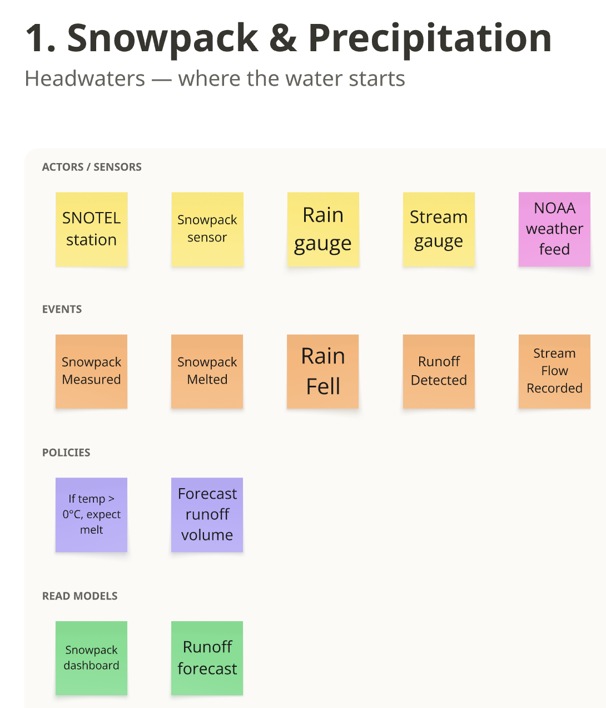
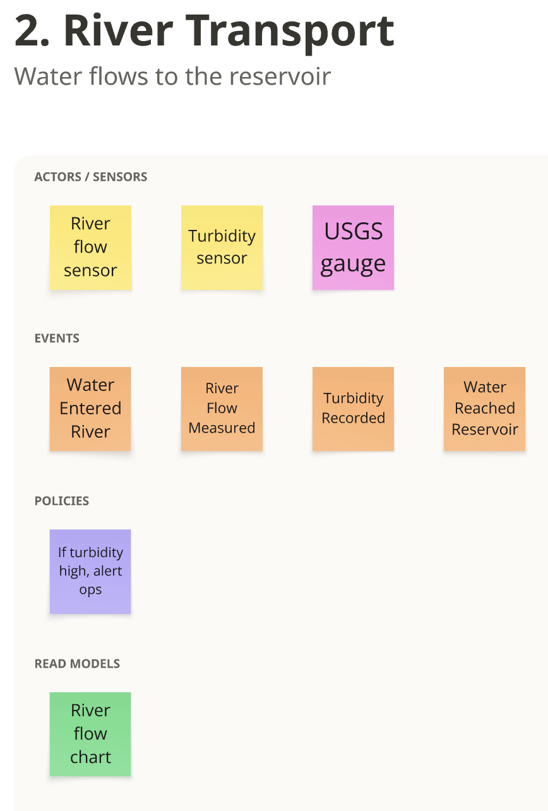
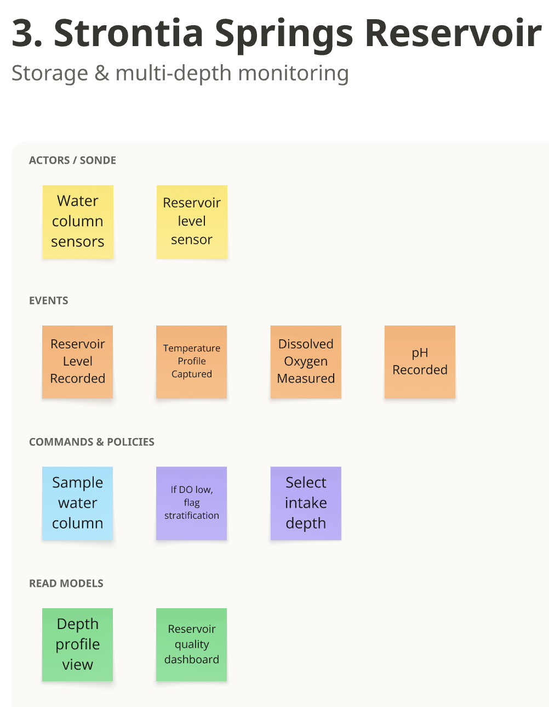
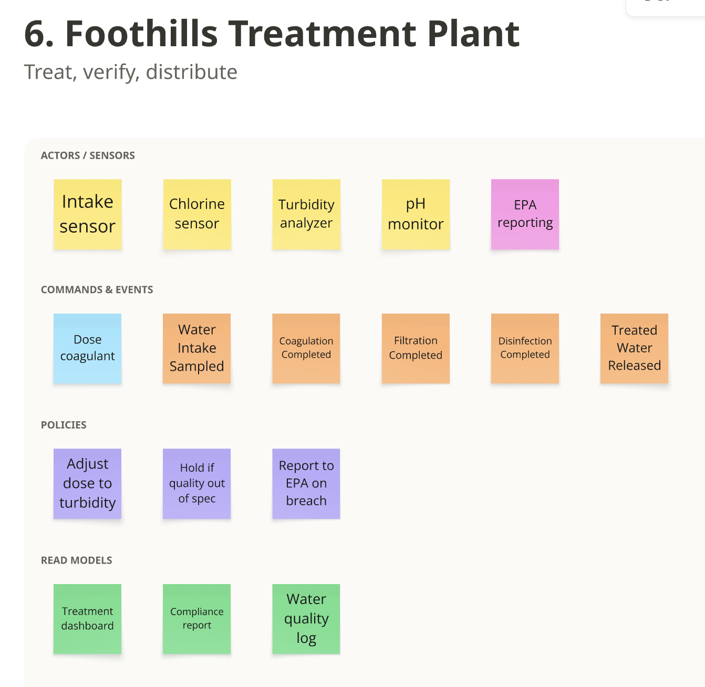
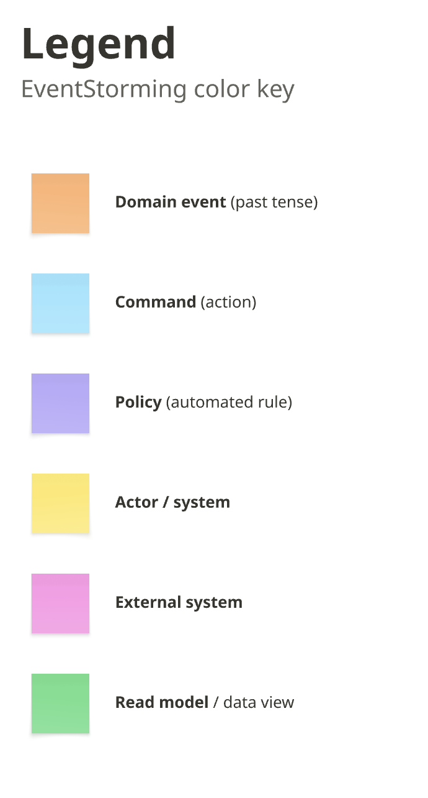

1. Big picture: the whole water system
The team's big-picture EventStorm, from snow in the headwaters to treated water leaving Foothills. It shows how the system works on any day. Section 2 zooms in on one part of it: how a storm's impact moves from the river gage to the plant, using real readings. Click a board to open it full size.
{kind=link}

{kind=link}

{kind=link}

Not added yet. The numbering jumps from 3 to 6. The dam and the Conduit 26 intake sit between the reservoir and the plant.
{kind=link}

{kind=link}

How the two levels connect
| Big-picture board | Storm timeline (section 2) | Bounded context | How they relate |
|---|---|---|---|
| 1. Snowpack & Precipitation | Not on the timeline | Watershed Observation (snowpack, NOAA weather) | Background only. Rain at the one weather station barely predicts river turbidity (rank correlation 0.02 over 1,009 days), and the runoff forecast is a prediction, which is outside Scenario 2. |
| 2. River Transport | River gage (Aug 14, 7:30 PM and Aug 15, 1:45 AM) | Watershed Observation | "Turbidity Recorded" is a routine reading. When it jumps, the storm timeline records GageResponseObserved and then TurbiditySpikeDetected. "Water Reached Reservoir" is water arrival, which takes hours. The timeline tracks impact arrival, which took about a day. |
| 3. Strontia Springs Reservoir | Reservoir (daily casts, Aug 16) | Reservoir Profiling | Temperature, oxygen and pH all come from the same sonde trip, which the timeline records as a single ReservoirProfileCollected. The storm-relevant event is DepthChangeObserved: the plume at mid-depth. "Depth profile view" is the "Reservoir depth chart". |
| 4-5. (missing) | Hot spot "What depth is the intake?" | None yet | The repo has no water-quality data for the dam or the Conduit 26 intake. |
| 6. Foothills Treatment Plant | Foothills plant (Aug 16) | Plant Influent | "Water Intake Sampled" is the daily lab sample behind PlantResponseObserved (TOC 2.0 to 2.5 mg/L). The treatment steps, from coagulation to release, go beyond Scenario 2. |
| None | Storm Event Catalog, Operator, Any time | Storm Event Catalog, Impact Visualization | These are what the big picture doesn't show: identifying a storm, the operator's arrival estimate, readings being revised, and one view across every stage (flow-path timeline, sensor map, past-storm comparison). This cross-stage view is the team's contribution. Each board's dashboard stands alone, which is exactly the "no visualization" problem Denver Water described. |
Suggested changes to the boards
- Add hot spots (open questions) to match section 2: What turbidity counts as a spike? Where is the sonde? What is the intake depth? Is there a real-time intake sensor?
- Mark sensors the repo has no data for as hot spots or future sources: the reservoir level sensor and the plant's intake sensor, chlorine sensor, turbidity analyzer and pH monitor. The only plant data here is the daily lab TOC and alkalinity.
- "Select intake depth" is an operator decision, so it belongs on a blue command sticky with the operator as its actor. Whether Foothills can choose its intake depth is still an open question.
- "If DO low, flag stratification." General knowledge, not from Denver Water's materials: stratification shows up as the gap between surface and deep temperatures, and low oxygen at depth is a result of it. "If surface and deep temperatures differ, flag stratification" is closer; confirm with Denver Water.
- "If turbidity high, alert ops" needs a threshold that Denver Water hasn't given yet. Pair it with a hot spot.
- Spelling: USGS and this repo write "gage", not "gauge".
- Add the operator, and the storm events (
StormEventIdentified,ImpactArrivalEstimated), so the big picture shows the decision the tool supports.
2. Event Storming timeline: one storm's impact
What happens, in order, as a storm's impact moves down the flow path. Orange stickies are domain events (past tense); the other colours show who or what causes them and what people look at.
3. Context map
Five bounded contexts. External feeds pass through an anti-corruption layer (ACL) so their formats and quirks, such as Excel date numbers and provisional flags, stay out of our model. Arrows point from upstream (supplier) to downstream (consumer).
4. Inside each bounded context
The aggregate is the unit the context protects and changes as a whole. Entities have identity; value objects are defined only by their values.
5. Ubiquitous language
Words the team, the code, and Denver Water should all use the same way. Replace these with Denver Water's own words as we learn them.
guide.md).| Term | Meaning | In our model | Source |
|---|
Every water term in glossary.md is included above. Its statistics terms (MAE, median, percentile, fold, recall, precision, and the rest) are about scoring Jake's Scenario 1 models, so only "Lead (days)" carries over here.